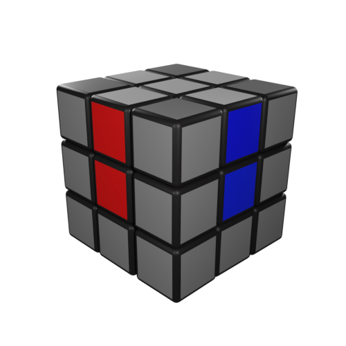

Перед тем, как начать сборку кубика Рубика, надо определиться с центром, на который мы будем ориентироваться. Чаще всего - это белый, он же и будет использоваться в этой инструкции.
Чтобы собраться белую сторону, нужно для начала собрать белый крест. Его сборка происходит путем сопоставления рёбер с белыми наклейками, с центрами, которые находятся на среднем слое (красный, синий, оранжевый, зеленый).
Внимание: на этом этапе работа производится исключительно с рёбрами, угловые элементы пока не трогаем.
Для сборки креста, надо отыскать на кубике рёбра с белыми наклейками, и в зависимости от соседней наклейки на этом элементе, подвести её к нужному центру, а затем и к белой стороне.
У нас есть БЕЛО-КРАСНОЕ ребро, красную наклейку мы подводим к красному центру, и когда получается два подрят квадратика красного цвета, идущие из центра, мы доворачиваем сторону до белого центра.
Так делаем со всеми оставшимися рёбрами. В итоге должен получится белый крест.
